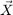
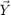
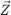
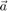
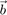
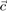

Explains how to define crystal orientations, how to switch between different convention and how to compute crystallographic equivalent orientations.
Open in Editor
Contents
Definition
Crystal orientations are rotations that describe the alignment of the crystal lattice with respect to a fixed specimen reference frame. Thus they consist of two incredients. A rotation
% lets take a random one
rot = rotation.rand
rot = rotation
size: 1 x 1
Bunge Euler angles in degree
phi1 Phi phi2 Inv.
62.7728 41.4018 57.9286 0
and a description of the crystal lattice, which are represented in MTEX by variables of type crystalSymmetry
cs = crystalSymmetry('cubic')
cs = crystalSymmetry symmetry: m-3m a, b, c : 1, 1, 1
Combining both incredients allows us to define an orientation
ori = orientation(rot,cs)
ori = orientation
size: 1 x 1
crystal symmetry : m-3m
specimen symmetry: 1
Bunge Euler angles in degree
phi1 Phi phi2 Inv.
62.7728 41.4018 57.9286 0
As a consequence a variable of type orientation is at the same time of type rotation and hence allows for all operations that are available for rotations.
Coordinate Transformations
In MTEX orientations are defined as the coordinate transformation that transforms coordinates of a (direction, tensor, slip system) with respect to a crystal fixed coordinate system into coordinates with respect to the specimen coordinate system.
As an example we consider the crystal direction
h = Miller(1,0,0,cs,'uvw')
h = Miller size: 1 x 1 symmetry: m-3m u 1 v 0 w 0
Then in specimen coordinates the direction h has the coordinates
r = ori * h
r = vector3d
size: 1 x 1
x y z
-0.322258 0.762951 0.560407
Conversely, we can go back from specimen coordinates to crystal coordinates by multiplying with the inverse orientation
inv(ori) * r
ans = Miller size: 1 x 1 symmetry: m-3m h 1 k 0 l 0
Note, that in literature orientations are often defined to transform specimen coordinates into crystal coordinates, i.e., to coincide with the inverse orientations in MTEX. The consequences of this differences are exhaustivly discussed in the topic orientation convemtions.
In the same manner orientations can be used to transform tensors given with respect to the crystal reference system
cs = crystalSymmetry('mmm',[4.7646 10.2296 5.9942],'mineral','Olivin'); fname = fullfile(mtexDataPath,'tensor','Olivine1997PC.GPa'); C = stiffnessTensor.load(fname,cs)
C = stiffnessTensor
unit : GPa
rank : 4 (3 x 3 x 3 x 3)
mineral: Olivin (mmm)
tensor in Voigt matrix representation:
320.5 68.2 71.6 0 0 0
68.2 196.5 76.8 0 0 0
71.6 76.8 233.5 0 0 0
0 0 0 64 0 0
0 0 0 0 77 0
0 0 0 0 0 78.7
into tensors given with respect to the specimen coordinate system
% some random orientation ori = orientation.rand(cs) % transform into specimen coordinates ori * C
ori = orientation
size: 1 x 1
crystal symmetry : Olivin (mmm)
specimen symmetry: 1
Bunge Euler angles in degree
phi1 Phi phi2 Inv.
311.304 140.611 278.58 0
ans = stiffnessTensor
unit: GPa
rank: 4 (3 x 3 x 3 x 3)
tensor in Voigt matrix representation:
239.39 76.12 88.87 -3.55 -20.66 16.87
76.12 210.1 80.61 -5.86 0.2 12.08
88.87 80.61 242.91 -6.75 -14.78 10.47
-3.55 -5.86 -6.75 78.95 14.25 -9.37
-20.66 0.2 -14.78 14.25 92.37 -9.7
16.87 12.08 10.47 -9.37 -9.7 77.43
Objects that can be translated by orientations from crystal into specimen cooordinates and vice verca include
Specimen Rotation
Rotations of the specimen ,i.e., changing the specimen reference frame, do also change the orientation. Assume the specimen is rotated about the X-axis about 60 degree. We may define this rotation by
rot = rotation.byAxisAngle(vector3d.X,60*degree);
Then an orientation ori is updated to the rotated reference frame by
ori_new = rot * ori
ori_new = orientation
size: 1 x 1
crystal symmetry : Olivin (mmm)
specimen symmetry: 1
Bunge Euler angles in degree
phi1 Phi phi2 Inv.
226.03 138.519 177.747 0
It should also be noted, that orientations are sensitiv with respect to the alignment of the Euclidean reference frame  ,  ,  with respect to the crystal axes  ,  and  . This issue is discussed in more detail in the topic The crystal reference system.
Defining crystal orientations
Since, orientations are essentialy rotations with respect to a crystal reference frame all parameterisations of rotations may be applied to define orientations. Those include
SUB: by Euler angles
Here an orientation is determined by three consecutive rotations in the sample reference frame. The first is about the z-axis, the second about the x-axis, and the third again about the z-axis. The corresponding three angles are called Euler angles and commonly denoted by phi1, Phi, phi2.
ori = orientation.byEuler(30*degree,50*degree,10*degree,cs)
ori = orientation
size: 1 x 1
crystal symmetry : Olivin (mmm)
specimen symmetry: 1
Bunge Euler angles in degree
phi1 Phi phi2 Inv.
30 50 10 0
MTEX supports a varity of other Euler angle conventions which use different axes of rotation as discuses in the topic Euler angle conventions.
SUB: by rotational axis and rotational angle
Another possibility to specify an orientation is to give its rotational axis and its rotational angle.
ori = orientation.byAxisAngle(xvector,30*degree,cs)
ori = orientation
size: 1 x 1
crystal symmetry : Olivin (mmm)
specimen symmetry: 1
Bunge Euler angles in degree
phi1 Phi phi2 Inv.
0 30 0 0
SUB: by Miller indices
There is also a Miller indice convention for defining crystal orientations.
ori = orientation.byMiller([1 0 0],[0 1 1],cs)
ori = orientation
size: 1 x 1
crystal symmetry : Olivin (mmm)
specimen symmetry: 1
Bunge Euler angles in degree
phi1 Phi phi2 Inv.
120.369 90 90 0
SUB: defining an orientation by a 3 times 3 matrix
ori = orientation.byMatrix(eye(3),cs)
ori = orientation
size: 1 x 1
crystal symmetry : Olivin (mmm)
specimen symmetry: 1
Bunge Euler angles in degree
phi1 Phi phi2 Inv.
0 0 0 0
SUB: predefined orientations
MTEX includes a list of standard standard orientations. For example the identical or cube orientation can be defined by the syntax
ori = orientation.id(cs)
ori = orientation
size: 1 x 1
crystal symmetry : Olivin (mmm)
specimen symmetry: 1
Bunge Euler angles in degree
phi1 Phi phi2 Inv.
0 0 0 0
In the samy way the following orientations can be defined: cube, brass, brass2, copper, copper2, cubeND22, cubeND45, cubeRD, goss, inverse goss, PLage, PLage2, QLage, QLage2, QLage3, QLage4, SR, SR2, SR3, SR4.
Note that a list of orientations can be defined using the same syntax as for the matlab commands ones, zeros, ..
ori = orientation.id(100,1,cs)
ori = orientation size: 100 x 1 crystal symmetry : Olivin (mmm) specimen symmetry: 1
SUB: random orientations
You may generate random orientations with
ori = orientation.rand(1000,cs)
ori = orientation size: 1000 x 1 crystal symmetry : Olivin (mmm) specimen symmetry: 1
SUB: grids of orientations
In many usecases one is interested in grid of orientations that somehow uniformely cover the orientation space. As there are many different grid there is a seperate topic orientation grids. The simplest way of generating equispaced orientations with given resolution is by the command
ori = equispacedSO3Grid(cs,'resolution',2.5*degree)
ori = SO3Grid symmetry: "mmm" - "1" grid : 237456 orientations, resolution: 2.5°
Specimen Symmetry
If the texture forming process has been symmetric the resulting is often as well. The resulting symmetry is then aligned with the specimen reference system. In MTEX specimen symmetry axes may only be defined parallel to the specimen axes x, y, and z. The syntax is very similar to the definition of crystal symmetries.
% define cubic crystal symmetry cs = crystalSymmetry('432') % and orthorhombic specimen symmetry ss = specimenSymmetry('222')
cs = crystalSymmetry symmetry: 432 a, b, c : 1, 1, 1 ss = orthorhombic specimenSymmetry
Orientations that respect crystal as well as specimen symmetries are defined by passign the specimen symmetry as an additional argument after the crystal symmetry.
ori = orientation.brass(cs,ss)
ori = orientation
size: 1 x 1
crystal symmetry : 432
specimen symmetry: 222
Bunge Euler angles in degree
phi1 Phi phi2 Inv.
35 45 0 0
Symmetrical Equivalent Orientations
Crystal orientations always appear as a class of symmetrically equivalent orientations which are physicaly not distinguishable. For a given orientation ori the complete list of all symmetrically equivalent orientations is computed by the command symmetrise
symmetrise(ori)
ans = orientation size: 96 x 1 crystal symmetry : 432 specimen symmetry: 222
Alternatively the list can be computed by multiplying with the specimen and the crystal symmetry from the left and from the right.
ss * ori * cs
ans = orientation size: 4 x 24 crystal symmetry : 432 specimen symmetry: 222
For specific orientations as for the brass orientations symmetrisation leads to multiple identical orientation. This can be prevented by passing the option unique to the command symmetrise
symmetrise(ori,'unique')
ans = orientation size: 48 x 1 crystal symmetry : 432 specimen symmetry: 222
Note that all operation on orientations are preformed taking all symmetrically equivalent orientations into account. As an example consider the angle between a random orientation and all orientations symmetricall equivalent to the goss orientation
ori = orientation.rand(cs); angle(ori,symmetrise(orientation.goss(cs))) ./ degree
ans = 44.0937 44.0937 44.0937 44.0937 44.0937 44.0937 44.0937 44.0937 44.0937 44.0937 44.0937 44.0937 44.0937 44.0937 44.0937 44.0937 44.0937 44.0937 44.0937 44.0937 44.0937 44.0937 44.0937 44.0937
The value is the same for all orientations and equal to the smallest angle to one of the symmetrally equivalent orientations. This can be verified by computing the rotational angle ignoring symmetry.
angle(ori,symmetrise(orientation.goss(cs)),'noSymmetry') ./ degree
ans = 100.2211 152.2979 56.5445 115.4468 118.1285 177.7160 157.4584 85.9871 44.0937 95.9440 117.8979 162.3181 137.1965 74.6893 129.0528 131.2383 155.1248 157.2273 89.2857 133.7336 142.8398 170.1668 155.6131 165.5799
Functions that respect crystal symmetry but allow to switch it off using the flag noSymmetry include dot, unique, cluster
Conversion into Euler angles, matrix, quaternion or Rodrigues vector
There are methods to transform quaternion in almost any other of rotations as they are:
% as Euler angles ori.phi1, ori.Phi, ori.phi2 % as quaternion quaternion(ori) % as matrix ori.matrix % as Rodrigues vector ori.Rodrigues
ans =
2.5699
ans =
0.7752
ans =
2.8912
ans = Quaternion
size: 1 x 1
a b c d
0.848696 -0.373114 0.0604613 -0.369927
ans =
0.7190 0.5828 0.3787
-0.6730 0.4479 0.5886
0.1734 -0.6781 0.7143
ans = vector3d
size: 1 x 1
x y z
-0.439632 0.0712402 -0.435877
Plotting Orientations
Orientations can be visualized in many different ways. The most popular way are pole figures
ori = orientation.rand(5,cs);
plotPDF(ori,Miller({1,0,0},{1,1,1},{1,1,0},cs))

Other options are inverse pole figures, sections through the Euler space and three dimensional orientation plots.
% in Euler angle space plot(ori,'filled')

in axis angle space
plot(ori,'axisAngle','filled')